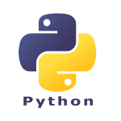
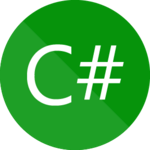

Python é uma linguagem de programação de alto nível, interpretada e de fácil leitura, muito popular tanto para iniciantes quanto para desenvolvedores experientes. Criada por Guido van Rossum e lançada em 1991, Python foi projetada para ser simples, com uma sintaxe clara e legível, o que facilita seu aprendizado e uso.
Java é uma linguagem de programação orientada a objetos, de alto nível, que foi criada por James Gosling e Mike Sheridan na Sun Microsystems em 1991, e lançada em 1995. Desde então, tornou-se uma das linguagens mais populares e amplamente utilizadas no mundo da programação. Java é conhecida por ser portátil, robusta e segura.

C# (pronunciado "C-sharp") é uma linguagem de programação desenvolvida pela Microsoft, criada por Anders Hejlsberg e lançada em 2000 como parte da plataforma .NET. C# é uma linguagem moderna, orientada a objetos, fortemente tipada e projetada para ser simples, robusta e eficiente, com foco no desenvolvimento de aplicações para a plataforma Windows, mas também suportando outras plataformas com o .NET Core.
R é uma linguagem de programação e ambiente de software para análise estatística, gráficos e computação científica. Desenvolvida por Ross Ihaka e Robert Gentleman em 1993 na Universidade de Auckland, na Nova Zelândia, R é amplamente utilizada por estatísticos, cientistas de dados e pesquisadores em várias áreas, como estatísticas, bioinformática, econometria e machine learning.